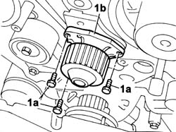
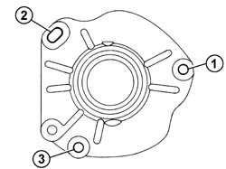
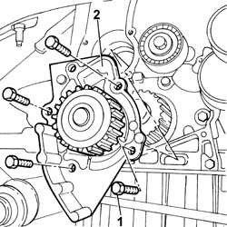

1088C14 WATER PUMP - R + R WITH DRIVE BELT REMOVED
- Path
- Procedures > 10 ENGINE > 1088 ENGINE COOLING > 1088C WATER PUMP AND THERMOSTAT > 1088C14 WATER PUMP - R + R WITH DRIVE BELT REMOVED
- Kind
- repair procedure (removal / refitting; the operation number is the code)
- Applies to
- engines: 3.0 24V V6, 2.0 16V JTD, 2.2 16V JTD; all production periods
- Interactive page
- https://sloeber94.github.io/elrnDB-fUlss/en/#/179007183
Applies to: engines: 3.0 24V V6; all production periods
 Removing
Removing
 Refitting
Refitting1. Undo the (3) fixing bolts (1a) and remove the water pump (1b) complete with the O-ring.

Applies to: engines: 3.0 24V V6; all production periods
Refitting
Removing- Replace the O-Ring.
- Clean the contact surfaces between the crankcase and the water pump using a suitable detergent product.
- Place the water pump in position and fully tighten the (3) fixing bolts manually, pre-tightening them to the recommended torque following the order illustrated.
 | Value - daNm | Fastening | Component | Ø |
|---|---|---|---|---|
. | (engine) 0.5 | Bolts | COOLANT PUMP | - |
- Tighten to the recommended torque following the order illustrated.
| Value - daNm | Fastening | Component | Ø |
|---|---|---|---|---|
. | (engine) 0.5 | Bolts | COOLANT PUMP | - |
- Resume the tightening several times in the same order until the torque is the same for all the bolts.
| Value - daNm | Fastening | Component | Ø |
|---|---|---|---|---|
. | (engine) 0.5 | Bolts | COOLANT PUMP | - |

Applies to: engines: 2.0 16V JTD; all production periods
Removing
Refitting1. Undo the bolts fixing the water pump to the crankcase.
2. Remove the water pump complete with O-ring underneath.

Applies to: engines: 2.0 16V JTD; all production periods
Refitting
RemovingBefore fitting the coolant pu mp, replace the o-ring.
Clean the contact surfaces between the crankcase and coolant pump using DECAPJOINT detergent
Fit the coolant pump and tighten the bolts to torque.
Value daNm | Fastening | Component | Ø | |
|---|---|---|---|---|
. | 0.5 | Bolt pretightening | COOLANT PUMP | - |
Values in Nm | Fastening | Component | Ø | |
|---|---|---|---|---|
- | 1.6 | Bolt tightening | COOLANT PUMP | - |
Values in Nm | Fastening | Component | Ø | |
|---|---|---|---|---|
- | 1.6 | Bolt tightening | COOLANT PUMP | - |
Applies to: engines: 2.2 16V JTD; all production periods
Removing
Refitting1. Undo the bolts fixing the water pump to the crankcase.
2. Remove the water pump complete with O-ring underneath.
Applies to: engines: 2.2 16V JTD; all production periods
Refitting
RemovingReplace the O-ring before refitting the water pump.
Clean the contact surfaces between the crankcase and the water pump using DECAPJOINT detergent.
Fit the water pump tightening the fixing bolts to torque.
Value daNm | Fastening | Component | Ø | |
|---|---|---|---|---|
. | 1.5 | Bolts | COOLANT PUMP | - |
Value in Nm | Fastening | Component | Ø | |
|---|---|---|---|---|
- | 1.6 | Bolt tightening | COOLANT PUMP | - |
Value in Nm | Fastening | Component | Ø | |
|---|---|---|---|---|
- | 1.6 | Bolt tightening | COOLANT PUMP | - |